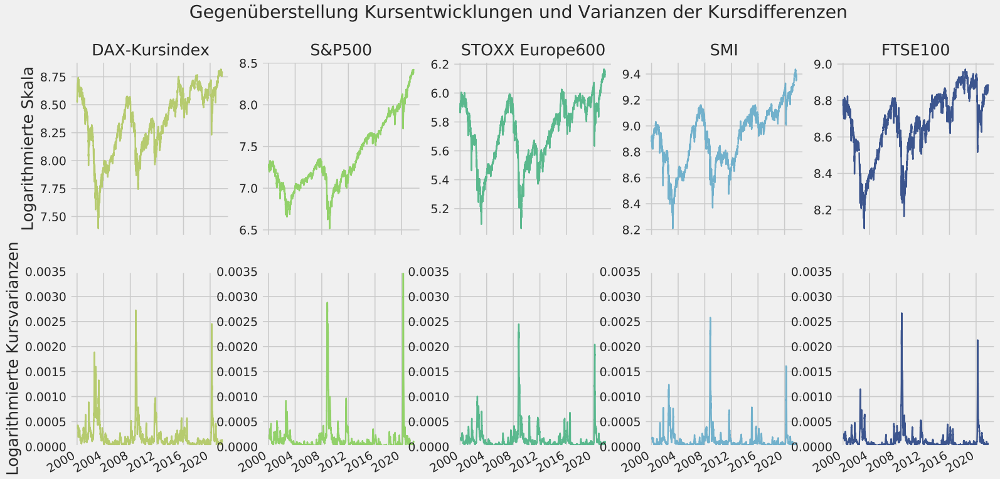
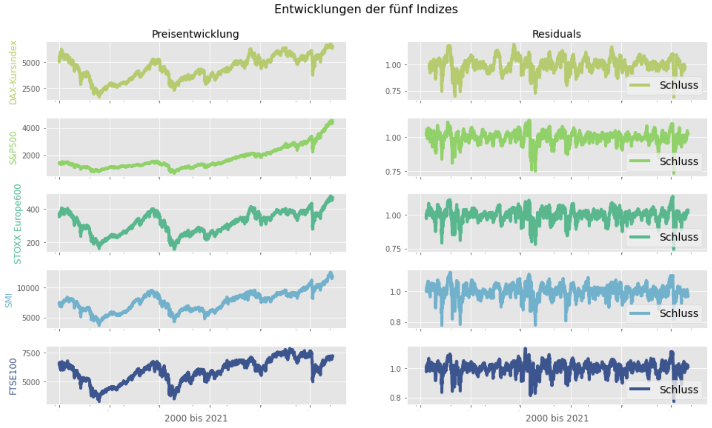

The DAX30 represents the economic value add (EVA) of the 30 most valuable firms in terms of market capitalization.
Thus, descriptive insights usings time series techniques helps to better understand the past index performance excluding dividend payments (VolatilityRisks-Part1).

This analysis adresses the Price-variance of DAX-30 Price-Index against the background of WACC (Weithed Average Cost of Capital), Beta-factor and riskfree Interest rate.
Focuse lies on identifying correlation patterns in the data (VolatilityRisks-Part2).

Risk is widely defined as the level of uncertainty which needs to be priced in order to define an investor's minimum required rate of return as decision criteria of the investment.
To measure or price the risk, the variance seems to be a good fit as a proxy (VolatilityRisks-Part3).

Residuals are next to trend & seasonality a component that characterize a data set as a time series.
The goal is to quantify the measurement of the difference between expected and actual values, i.e. residuals error (VolatilityRisks-Part4).

This analysis is the first part of three exploring the development of Risk measured by the Beta-Factor of 30 DAX-companies (InferenceStatistics-Part1).
I apply Bootstrapping to make statistical inference without to many assumptions and without relying on to much data (InferenceStatistics-Part2).
Permutation-Testing seek to break whatever structure might be preset in a dataset, and quantify the kinds of patterns one expects to see “purely by chance.”
Therefore, I quantify null distributions of 5 distinct datasets comprising 30 Beta-factors (InferenceStatistics-Part3).